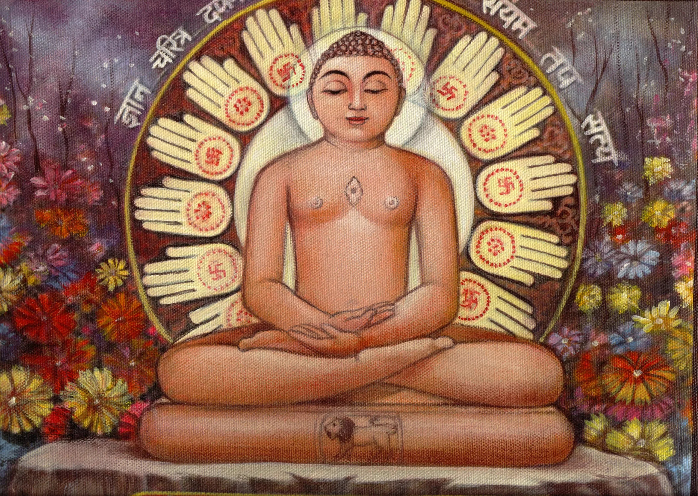
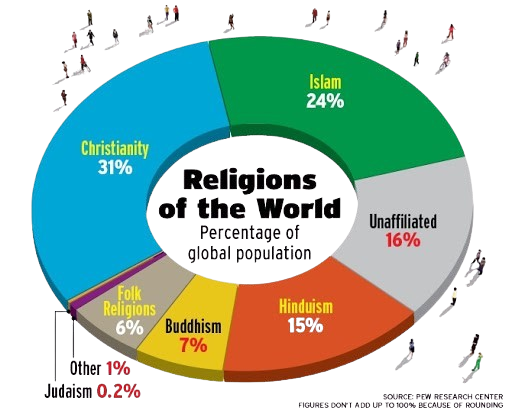

2000 BC
Hinduism origins, around 2000 BC
750-550 BC
Teachers interpret Vedic hymns (Upanishads)
599-527 BC
Mahavira's birth & Jainism's rise

2500 Years Ago
Hinduism evolves over 2500 years
Present Day
Hinduism practiced by nearly 1 billion people
